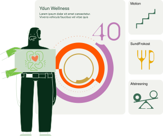
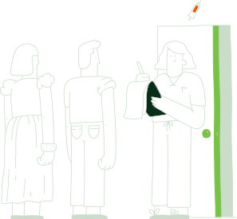

What the staff plan, what the player eats, and what actually happens. Ydun gives football clubs a preventive health and nutrition programme built around each player's own baseline.
Understand each player over time, not against a squad average.
Track each change through to biological and functional response.
A concise longitudinal view for the Head of Nutrition and performance staff.
Ydun is an all-in-one preventive programme delivered at the training ground, around the training schedule. Four steps, then the cycle repeats.
Phase 1 builds each player's baseline. Phase 2 closes the loop once the data allows it. Click any step, or play the loop.
Energy needs in football change day by day. Pick a schedule, set body mass and tap a day to see how the nutritional strategy shifts across the matchweek.
Ranges are general, population-level guidance for elite football (e.g. the UEFA expert group statement on nutrition in elite football, 2021). They are a starting point, not a prescription — in Ydun, each player's plan is set by the club's nutrition staff and adjusted against that player's own response.
A value that looks fine next to the squad average can still be unusual for that player. Switch the reference and see which weeks get flagged.


Ydun is developed together with leading researchers in public health, nutrition, sport science, motivation and psychology from the University of Copenhagen and Aarhus University.
All measurements are stored on BioTell™, our secure health data platform developed with KMD. It turns raw values into clear wellness scores that are easy to follow from one test to the next.
Servers are located in the EU and comply with GDPR and health-record requirements. Players log in with MitID, and personal health data stays personal.
Tell us about your club, your staff and your season — we'll show you how Ydun fits around your training week.